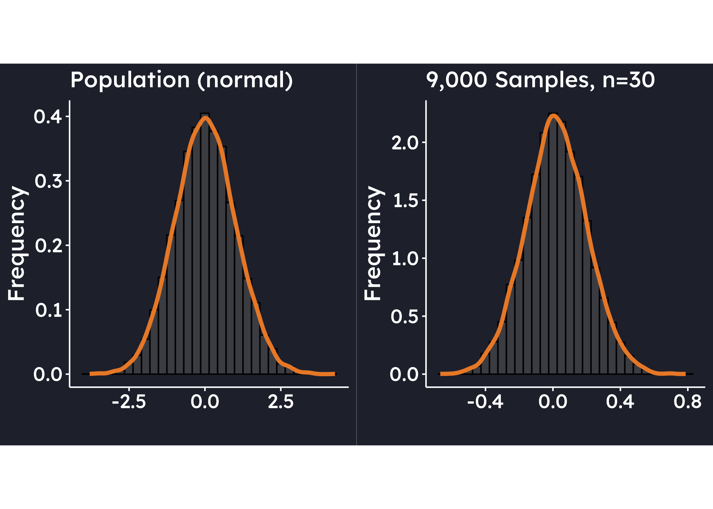

me <- filter(world, countrycode=="BHR" | #Bahrain
countrycode=="CYP" | #Cyprus
countrycode=="EGY" | #Egypt
countrycode=="IRN" | #Iran
countrycode=="IRQ" | #Iraq
countrycode=="ISR" | #Israel
countrycode=="JOR" | #Jordan
countrycode=="KWT" | #Kuwait
countrycode=="LBN" | #Lebanon
countrycode=="OMN" | #Oman
countrycode=="QAT" | #Qatar
countrycode=="SAU" | #Saudi Arabia
countrycode=="ARE" | #UAE
countrycode=="YEM" #Yemen
)
me_15 <- filter(me, year==2015)
mean(me_15$polity5)
sd(me_15$polity5)
world$un_region_name
europe <- filter(world, un_region_name=="Southern Europe"|
un_region_name=="Western Europe" |
un_region_name=="Eastern Europe" |
un_region_name=="Northern Europe")
europe_15 <- filter(europe, year==2015)
mean(europe_15$polity5, na.rm=TRUE)
t.test(me_15$gdppc, mu=8.7,
data=me_15)Week 2
Road Map for Today
| Lecture |
| Causality |
| A Clear Theoretical Framework |
| Modernisation Theory |
| Critique & Competing Approaches |
| Break |
| Linear Regression - Theory & Application |
Learning Outcomes
After this week, students should be able to:
- Explain the role of theories in empirical political science research
- Describe and critique the propositions of modernisation theory
- Discuss the principles of statistical inference
- Understand and apply linear regression (Ordinary Least Squares)
- Appraise model fit in linear regression models
Principles of Statistical Inference
Starting to write this, I am tackling the interesting task of condensing four weeks’ worth of material of my introductory quantitative module into a few paragraphs. But a brief overview of statistical inference and significance tests is essential for you to understand the interpretation of the methods we are going to explore. So let’s start with probability distributions.
Probability Distributions
The term probability distribution sounds fancy, but really only implies that we are assessing the relative frequency with which a particular value occurs. So, for example, if I have six History students on the module, and four PAIS students, then the probability of being a PAIS student is 40%. For categorical data, such as this, we can assign a probability to each category. But for continuous variables, such as the Polity V score, or per capita GDP this no longer works. Instead, we assign probabilities to an interval of numbers. In the following graph, I am putting the values of such a continuous variable on the x-axis, and then draw a curve over this which indicates the probability distribution for these values.

In this graph, the values on the x-axis between alpha and beta have a probability of occurring that is equal to the orange area under the curve. This curve is bell-shaped, and symmetrical around the mean of the variable x, and is known as the normal distribution. The beauty of this distribution is that the amount of probability that is contained in an interval around the mean depends solely on the number of standard deviations, denoted as \(\sigma\), of the variable x. So, for example, if I travel one standard deviation to the left and to the right from the mean, I will always have 68% of the area under the distribution in this interval.

For two standard deviations, this is equivalent to 96% and for three standard deviations 99.9%. Schematically this looks as follows:

The total area under the probability distribution is equal to 100%. So, if the orange area in Figure 2 is equal to 68%, then the remaining area must be 32%. As this area is split equally into a left and a right side, the area on the right must be 16%. This is what is known as a right-tail probability. Here it is the probability beyond 1 standard deviation, or \(1 \sigma\).
This means that if we know how many standard deviations away from the mean of the distribution a value falls, we can make a statement on how likely it would be to observe a value that is higher than this value. For example, if I know the distribution of marks on a module, this would allow me to state how likely it was to achieve a First, or a mark of higher than 70. Assume that the average of an assessment was 63, and the standard deviation 9. Then the difference between the mean and the value we are interested in is equal to 70-63=7. To express this distance in units of standard deviations, we now divide 7 by 9, and obtain something that is called a z-score:
\[\begin{equation} z=\frac{\text{Observation} - \text{Mean}}{\text{Standard Deviation}} \end{equation}\]
In our case, z would be equal to 7/9, or 0.7777778. You can look this value up in a z-table which lists the right-tail probability for all conceivable values of z. For z=0.78 it returns a probability of 21.77%. With a mean of 63 and standard deviation of 9,the probability of scoring a First would be 21.77%.
This all works fine, so long as we are dealing with the population. Sadly, we rarely have access to the population in the social sciences, however. Surveys, for example, are usually conducted for a small representative sub-group of the population, a sample. So, how do we make statements about the population if we only have access to a sample? The answer is: with a sampling distribution.
Sampling Distributions
Whenever we draw a sample from a population, the values we draw will vary. Therefore, also the mean of these values will vary each time. Imagine I draw a sample of 5 students from a seminar group, time and time again, and each time I calculate the average age of these 5 students. Sometimes the average will be high, sometimes it will be low, but – and here comes the magic – the value that will come up most often in these samples is the true mean of the population (all students in the seminar). We call this population value a parameter.
If we arrange all of the sample means we have obtained from sampling again and again, these means will form a distribution in their own right, the sampling distribution. This has the true population mean (let’s denote this as \(\mu\)) in its centre. In Figure 4, for example, I have simulated a population with a mean of zero, and have drawn 9000 samples from this population, each with 30 observations. As you can see, the distribution of means of each of these 9000 samples forms a normal distribution which has zero, the population mean, at its centre.

So, we know the mean of the sampling distribution, but what about its standard deviation? We could of course take samples repeatedly from the population and calculate it, but that is wasteful. Instead, we estimate it by dividing the standard deviation of the one sample we usually have by the square root of the sample size. The result is the so-called standard error, denoted as “se”, the standard deviation of the sampling distribution.
\[\begin{equation} se=\frac{s}{\sqrt{n}} \end{equation}\]
where s is the sample standard deviation and n is the sample size.
The sample standard deviation varies with each sample we draw, however, and this introduces uncertainty into our analysis. The normal distribution cannot deal with this uncertainty, and so we have to abandon it in favour of the t-distribution.
The t-Distribution
The t-distribution is also bell-shaped and symmetrical, centered around a fixed mean of zero. But, crucially, its shape is not static, but depends on the number of degrees of freedom. Degrees of freedom are constraints on the estimation process that reflect the number of independent pieces of information available. In our case, the constraint arises from estimating the population standard deviation \(\sigma\) using the sample standard deviation, \(s\). For a single sample, the degrees of freedom are defined as n-1, where n is the sample size. Depending on these degrees of freedom, the t-distribution becomes wider or narrower, expressing the uncertainty we are incurring from working with a sample of a particular size. You can see in Figure 5 that with increasing sample size the t-distribution becomes narrower and narrower, until – for an infinite sample size – it is equivalent to the normal distribution again. The smaller the sample size, the wider the t-distribution becomes. This means that as the sample size decreases we need to travel more standard deviations away from the mean in order to obtain a certain probability. More on this below under “Confidence Intervals”.

Using the sampling distribution, we can create a range of values that we think the true population value (like the average) falls into. This range is called a confidence interval. For example, a 95% confidence interval means that if we took many random samples and made a new interval each time, about 95% of those intervals would contain the true value.
Confidence Intervals
How do we construct confidence intervals? We start by setting the confidence level — the proportion of confidence intervals, constructed from repeated random samples of the same population using the same method, that are expected to contain the true population parameter. It is denoted by (1 - ), where () is the significance level. For example, a 95% confidence level implies that 95% of such intervals would contain the true parameter in the long run.
Because the interval is constructed from a sample, we use the sampling distribution of the sample mean. We place the sample mean at the center of this distribution and treat it as our point estimate of the unknown population mean. To establish an interval around this estimate corresponding to the desired confidence level, we determine how many standard errors we must move to the left and right. Whereas under the normal distribution this was the z-score, under the t-score this number is called the t-score, which can be found using a statistical table.
The appropriate t-score depends on the sample size (or the degrees of freedom, to be more precise). As hinted above, for smaller samples the t-distribution is wider, so we need to travel further away from the mean to achieve the same level of confidence than we would with a larger sample and a narrower distribution. For example, to construct a 95% confidence interval, we would use a t-score of approximately 2.306 for a sample of 9, but only 2.045 for a sample of 30.
As an example, reconsider our fictitious assessment with an average of 63, and the standard deviation 9. I used this for a probability statement in a population earlier, but now assume this is based on a sample of 15 students from a much larger module. Within which boundaries do we believe the parameter to fall with 95% confidence?
As a first step, we calculate the standard error:
\[\begin{equation} se=\frac{s}{\sqrt{n}}= \frac{9}{\sqrt{15}} = 2.32379 \end{equation}\]
As we have 15 observations, we have 14 degrees of freedom (n-1) which corresponds to a t-score of 2.145. We can thus state that with 95% confidence the parameter, \(\mu\), falls between 58.02 and 67.98.
\[\begin{align} \bar{y} - t \cdot se \le \;\; &\mu \; \le \bar{y} - t \cdot se \\\\ 63- 2.145 \cdot 2.32379 \le \;\; &\mu \; \le 63 + 2.145 \cdot 2.32379 \\\\ 58.01547 \le \;\; &\mu \; \le 67.98453 \end{align}\]
where \(\bar{y}\) is the average in the sample1.
We will come back to confidence intervals in the context of regression analysis. Let us now look at significance tests.
Tests of Statistical Significance
As you know from the lecture last week, in the social sciences we generally test whether we can explain behaviour or some kind of phenomenon through a particular theory. In practical terms this means that we distill the theory into testable statements, called hypotheses. Take this hypothesis, for example: The average level of democracy in the Middle East is statistically different from that of Europe. In this statement, we are no longer interested in establishing an interval of numbers within which we believe the average level of democracy in the Middle East to fall, but we are comparing it with a particular value, or point: the level of democracy in Europe. This kind of assessment is called a significance test.
Every significance test has two hypotheses, an alternative, and a null-hypothesis. The alternative hypothesis is the one I already stated:
The null-hypothesis always represents no effect. In our case the region would have no impact on the democracy level, and the Polity V score of Europe and the Middle East would be identical.
The average Polity V score in the Middle East was -2.8 in 2015 with a standard deviation of 7.07 across 15 countries. The average Polity V score for Europe in the same year was 8.7.
How to obtain these values
In order to ascertain whether the observed value of -2.8 is statistically different from the null-hypothesis value, 8.7, we need to make a probability statement. To be precise, we need to quantify the probability of observing a value that is more extreme than than one we have already observed if the null hypothesis was true. If this probability is small, then the value we have can be regarded as highly unusual and we can conclude that it is statistically different from the null-hypothesis value. This probability of observing a value more extreme than the one we have observed, assuming the null hypothesis is true, is the p-value.
Usually, we want the p-value to be quite small, either 5% or 1%. R will obtain this for us, but so you know what happens behind the scenes, here is a quick summary. We place the null hypothesis into the centre of a sampling distribution, effectively pretending that this is our population parameter. In other words, we assume that the null hypothesis is true. Now we look at where in relation to this null hypothesis value our observed value falls. We are then able to calculate the distance between the observed value and the null-hypothesis value in units of standard error. This is equivalent to the t-value, our test statistic. We calculate it as follows:
\[\begin{equation} t = \frac{\bar{y} - \mu_{0}}{se}, \quad \text{where} \, se = \frac{s}{\sqrt{n}} \end{equation}\]
In our example:
\[\begin{equation} t = \frac{-2.8 - 8.7}{1.826243} = -6.297081, \quad \text{where} \, se = \frac{7.07301}{\sqrt{15}} \end{equation}\]
This places us quite far out into the tails of the t-distribution (see Figure 6), and as such the probability of observing a value more extreme is very small. Hence, we can regard our observed value of -2.8 as unusual and conclude the the average democracy level in the Middle East is statistically different from that of Europe. The precise p-value for this is 0.001283, well below our desired significance level of 5%.

I have displayed this here as a two-sided test. We did not specify whether we expect the level of democracy in the Middle East to be higher or lower than in Europe, just different. As both directions are therefore possible, the p-value is made up of the sum of the areas in the left and the right tails of the distribution. One-sided tests are possible, but generally in regression analysis the test is two-sided which is why I will leave it at that here.
Interpreting Significance Tests
In these assessment, and when reporting statistical results more generally, you’ll be required to interpret the outcome of a significance test. To do this well, it’s important to use language that reflects what null hypothesis significance testing (NHST) actually tells us, without overstating what the test can conclude.
NHST works by starting with the null hypothesis - usually a claim like “there is no effect” or “there is no difference”. We use the data to test whether that assumption is plausible. If the p-value is small, it means that results as extreme as the one we observed — or more extreme — would be rare if the null hypothesis were true. So, we take that as evidence against the null. But if the p-value is large, then the data are consistent with the null. And that’s where your interpretation should stop (at least at the introductory level, to avoid stretching and overstating).
There are two possible outcomes of a significance test: (1) your p-value is below the required significance level, and (2) your p-value is above the required significance level. Let’s look at these in turn:
If your p-value is below the required significance level, you can say things like:
- “There is evidence of an effect.”
- “We reject the null hypothesis.”
- “The data provide evidence against the null hypothesis.”
- “There is statistically significant evidence of a difference (or relationship, or effect).”
Avoid phrasing that implies certainty, such as:
- 🚫 “We proved the alternative hypothesis.”
- 🚫 “We proved that there is an effect.”
- 🚫 “We accept the alternative hypothesis.”
If your p-value is above the required significance level to reject the null hypothesis, you can say things like:
- “There is insufficient evidence for an effect (of a difference, for a relationship).”
- “We cannot reject the null hypothesis.”
- “We fail to reject the null hypothesis.”
- “The results are consistent with the null hypothesis.”
Avoid phrasing that overstates what the test can tell you, such as:
- 🚫 “We proved the null hypothesis.”
- 🚫 “We reject the alternative hypothesis.”
- 🚫 “The null hypothesis is true.”
Having taught quantitative political analysis for many years, I know that students love to use the word “prove” when they interpret their results. But there is no proof in significance testing, because we deal with probability statements, not certainty.
And with that, we are finally ready to turn our attention to the actual topic for today: linear regression.
Linear Regression - Theory
Introduction
Regression is the power house of the social sciences. It is widely applied and takes many different forms. In this section we are going to explore the linear variant, estimated through a method called Ordinary Least Squares (OLS). This type of regression is used if our dependent variable is continuous. In Week 3 we will have a look at regression with a binary dependent variable and the calculation of the probability to fall into either of those two categories. But let’s first turn to linear regression.
What is it?
Regression - What is it?
YouTube link to follow
Regression is not only able to identify the direction of a relationship between an independent and a dependent variable, it is also able to quantify the size of the effect. Let us choose y as our dependent variable, and x as our independent variable. We have some data which we are displaying in a scatter plot:

With a little goodwill we can already see that there is a positive relationship: as x increases, y increases, as well. Now, imagine taking a ruler and trying to fit in a line that best describes the relationship depicted by these points. This will be our regression line.
The position of a line in a coordinate system is usually described by two items: the intercept with the Y-axis, and the slope of the line. The slope is defined as rise over run, and indicates by how much \(y\) increases (or decreases is the slope is negative) if we add an additional unit of \(x\). In the notation which follows we will call the intercept \(\beta_{0}\), and the slope \(\beta_{1}\). It will be our task to estimate these values, also called coefficients. You can see this depicted graphically here:

In the context of the module, we would for example have per capita GDP on the x-axis (independent variable), and Polity V measuring the level of democracy on the y-axis (dependent variable). This would look like this in the year 2015:

Population
We will first assume here that we are dealing with the population and not a sample. The regression line we have just drawn would then be called the Population Regression Function (PRF) and is written as follows:
\[\begin{equation} E(y|x_{i}) = \beta_{0} + \beta_{1} x_{i} \end{equation}\]
\(E(Y|X_{i})\) reads as the expected value of \(y\), given a particular observation of \(x\), and so the population regression function is also known as the conditional expectation function. It represents the average value of \(y\) we expect to observe, if \(x\) is equal to a particular value.
As you can see, the line is not intercepting with all observations – it only represents the conditional averages, after all. Only two observations are located on the line, and all others have a little distance between them and the PRF. These distances between \(E(y|x_{i})\) and \(y_{i}\) are called error terms and are denoted as \(\epsilon_{i}\).

To describe the observations \(y_{i}\) we therefore need to add the error terms to the PRF:
\[\begin{equation} y_{i} = \beta_{0} + \beta_{1} x_{i} + \epsilon_{i} \end{equation}\]
Sample
In reality we hardly ever have the population in the social sciences, and we generally have to contend ourselves with a sample. Nonetheless, we can construct a regression line on the basis of the sample, the Sample Regression Function (SRF). It is important to note that the nature of the regression line we derive from the sample will be different for every sample, as each sample will have other values in it. Rarely, the PRF is the same as the SRF - but we are always using the SRF to estimate the PRF.
In order to flag this up in the notation we use to specify the SRF, we are using little hats over everything we estimate, like this:
\[\begin{equation} \hat{y}_{i} = \hat{\beta}_{0} + \hat{\beta}_{1} x_{i} \end{equation}\]
Analogously, we would would describe the observations \(y_{i}\) by adding the estimated error terms \(\hat{\epsilon}_{i}\) to the equation.
\[\begin{equation} y_{i} = \hat{\beta}_{0} + \hat{\beta}_{1} x_{i} + \hat{\epsilon}_{i} \end{equation}\]
These estimated error terms, \(\hat{\epsilon}_{i}\), are called residuals. The following graph visualises the relationship between an observation, the PRF, the SRF, the error terms, and the residuals.

Ordinary Least Squares (OLS)
When you eye-balled the scatter plot at the start of this Chapter in order to fit a line through it, you have sub-consciously done so by minimising the distance between each of the observations and the line. Or put differently, you have tried to minimise the error terms \(\hat{\epsilon}_{i}\). This is basically the intuition behind fitting the SRF mathematically, too. We try to minimise the sum of all error terms, so that all observations are as close to the regression line as possible. The only problem that we encounter when doing this is that these distances will always sum up to zero.
But similar to calculating the standard deviation where the differences between the observations and the mean would sum up to zero (essentially we are doing the same thing here), we simply square those distances. So we are not minimising the sum of distances between observations and the regression line, but the sum of the squared distances between the observations and the regression line. Graphically, we would end up with little squares made out of each \(\hat{\epsilon}_{i}\) which gives the the method its name: Ordinary Least Squares (OLS).

Ordinary Least Squares (OLS)
YouTube link to follow
We are now ready to apply this stuff to a PO33Q-related example!
Linear Regression – Application
The Basic Command
The command to run a regression in R is beguilingly simple:
regression <- lm(devar ~ indepvar, data=dataframe)We specify an object into which we store the results of the regression, here regression, and assign a function to this object called lm which stands for “linear model”. It is then convention to state the dependent variable first in the command, which in our case will always be democracy. This is then followed by a tilde and the independent variable which you want to include.
In the case of modernisation theory, you might want to test what influence per capita GDP has on democracy. This week we are using the Polity V scale to measure democracy.
The ‘Polity Score’ captures [the] regime authority spectrum on a 21-pont scale ranging from -10 (hereditary monarchy) to +10 (consolidated democracy). (…) The Polity scheme consists of six component measures that record key qualities of of executive recruitment, constraints on executive authority and political competition. It also records changes in the institutionalized qualities of governing authority.”2
We start by setting the working directory
and then load the Europe.csv data set into the workspace. We subset this data frame to observations from the year 1994, only. Yes, I know it’s a long time ago, but I need an example that works for everything I want to show you this week.
europe <- read.csv("Week 2/Europe.csv")
library(tidyverse)
europe_1994 <- filter(europe, year == "1994")Our dependent variable is called polity5. The independent variable is called gpdpc. We are now ready to run our first regression:
reg_pol <- lm(polity5 ~ gdppc, data=europe_1994)We can then produce a summary of the results as follows:
summary(reg_pol)
Call:
lm(formula = polity5 ~ gdppc, data = europe_1994)
Residuals:
Min 1Q Median 3Q Max
-9.5657 -0.3115 0.6054 1.5330 3.3036
Coefficients:
Estimate Std. Error t value Pr(>|t|)
(Intercept) 6.120e+00 7.785e-01 7.861 2.45e-08 ***
gdppc 1.377e-04 4.036e-05 3.411 0.00212 **
---
Signif. codes: 0 '***' 0.001 '**' 0.01 '*' 0.05 '.' 0.1 ' ' 1
Residual standard error: 2.794 on 26 degrees of freedom
(10 observations deleted due to missingness)
Multiple R-squared: 0.3092, Adjusted R-squared: 0.2826
F-statistic: 11.64 on 1 and 26 DF, p-value: 0.002123We can extract the number of observations used for the estimation by calling:
nobs(reg_pol)[1] 28There is a lot of information in this, and I will take you through the output step by step now.
Interpreting the Output
The Number of Observations
nobs(reg_pol)[1] 28Let’s deal with the last step first. The number of observations is equal to the number of countries in this case. We have subset the data to the year 1994, and so we have 28 countries in the analysis. This seems trivial for now, but it will become important later on. Once observations are missing, R drops them from the analysis – especially in developing countries where data are often missing in large quantities this can lead to a rapid decimation in the number of observations. This in turn is problematic for the strength inference we can draw from the analysis.
The all-important p-value in Regression
The p-Value
YouTube link to follow
It might seem odd to focus on the p-value before interpreting the coefficients substantively, but this is precisely what you have to do in practice, as well. If a regression coefficient is insignificant, then we have failed to reject the null hypothesis, and have no evidence for a relationship. This is it. This is all you can say. Should this happen to you in the assessment, please do not engage in speculation of “had the coefficient been significant, then it would suggest that…”. No. There is no relationship. State that, and move on. Only if there is a relationship you can move on to interpreting the coefficients substantively.
If you interpret insignificant coefficients substantively (other than that there is no relationship) in the assessment you will lose marks.
But how do you assess significance? We do a regression in order to ascertain whether there is a relationship between the independent and the dependent variable, or not. For testing whether there is one, we start from the assumption that there is none. This is what we call the null hypothesis; in our example here it would be that per capita GDP does not influence the level of democracy in a country.
Now, remind yourself of the normal distribution from the video which has the mean age in its centre. In the video we were interested whether age influences height. Assuming, that there is no relationship between age and height, a regression line would look as follows:

The line is perfectly flat (the slope coefficient is zero), intercepting the y-axis at the mean. It does so, because the regression line is the value of y we would expect on average for a given x. If this value does not vary, it has to be the average of y. If we now put a zero slope coefficient, such as the one for height, just in the more general form of \(\beta_{2}\) in the centre of a normal distribution, it looks like this:

What we want to test now, with regression, is whether the slope coefficient R has calculated for us (let me denote the estimated value of \(\beta_{1}\) as \(\hat{\beta_{1}}\)), is far enough from this mean of zero, to say that we can be sure to say that there is a relationship.
The statement that there is a relationship between the independent and the dependent variable, is called the alternative hypothesis. In our case the alternative hypothesis would read: “The level of per capita GDP influences the level of democracy in a country”.
So how far away from the centre of zero do we have to go to say that there is indeed relationship, or put differently, that we have enough evidence to reject the null hypothesis? The standard in political science is that we need to have a 5% probability of finding a value more extreme than the one we have observed. Under the curve in the following graph, that is equal to the orange area on the right. And that is the p-value.

If this area is 5% or less, then we have observed a value for the slope coefficient which is so far away from our assumed mean of zero, that we have sufficient evidence to reject the null hypothesis.
But now, you might say, a slope coefficient can also be negative – here we are only looking at the right hand-side, and therefore at the scenario in which a slope coefficient is positive. And you are right. The scatter plot could give us a negative line. So, if we want to move away far enough from the assumed mean of zero in the centre, we must do so in both directions, to the left and to the right. Now, we need a value that is so far out, that to either side of the distribution, 2.5% of the area are left under the curve (2.5% on the left plus 2.5% on the right make the overall 5% we are interested in). We call this a two-sided test, whereas the scenario above is a one-sided test. The p-values reported by R for the slope coefficients are always two-sided tests (unless we tell R not to, but we are not doing that on this module). This value gives us the area under the normal distribution to the left and the right beyond our observed value, as shown in this figure:

The value we are looking at in R to determine the p-value, is in the column \(Pr(>|t|)\).

In order to satisfy the requirement of the p-value being 5% or less, this value needs to be smaller than 0.05. Otherwise, more than 5% area are left, and we are not certain enough that our value is far enough away from the zero mean in the centre to say that it is “statistically different” from it. When we look at the value for the slope coefficient gdppc here, 0.00212, this means that the areas on the left and the right are jointly 0.21% – small enough for us to be sure to have found a value that is far enough away from zero to claim that there is a relationship. We therefore reject the null hypothesis: we find evidence for a relationship between per capita GDP and Polity V in Europe in the year 1994. Again, if we want to visualise this, the actual p-value of \(0.00212\) would look like this:

The Intercept

R always shows the value for the intercept in the intuitively labelled row “(Intercept)” and the column “Estimate”. In this case the value is 6.1. What does this coefficient mean, substantively? When you remember the graph depicting the regression line, this is the point where the line intercepts the y-axis. So, it is the value of \(y\), here democracy in the form of the Polity V score, when \(x\), here economic development in the form of GDP, is zero. So in other words, a country with a GDP per capita of zero would achieve a Polity V score of 6.1. The substantive interpretation sometimes makes sense (like here), but sometimes cannot be interpreted in this way.
The Slope Coefficient

The slope coefficient is shown in the row depicting the name of the independent variable, here “gdp”, and again the column “Estimate”. Our slope here, is \(1.377e-04\). The \(e-4\) means that we have to move the decimal point 4 units to the left, so written fully, this means \(0.0001377\). We interpret it as follows: for every additional unit of per capita GDP, measured in US$, the Polity V score increases by \(0.0001377\), on average. This seems very small, but when you consider the size of GDP per capita in many countries, it seems logical that this value is as small as it is. If the coefficient was negative, then this would mean that for for every additional unit of per capita GDP, measured in US$, the Polity V score would decrease by \(0.0001377\), on average.
Interpreting a coefficient
The order in which to interpret a coefficient is as follows:
- Is it significant? If not, all you can say is that there is no influence. There is insufficient evidence to support the alternative hypothesis.
- If it is significant, you can interpret its size and direction according to the statistical model (for example, slope coefficent vs. partial slope coefficient).
- What does the coefficient mean for the hypothesis? Look at the direction. Is the direction as predicted by the hypothesis? Then you have evidence to support the hypothesis. If the direction is inverse, then you have falsified the hypothesis, even though you have a significant coefficient.
The Goodness of Fit (R-Squared)

Goodness of Fit
YouTube link to follow
As you have seen in the video, the goodness of fit is a measure to indicate how much of the variation in the dependent variable (democracy) the independent variable (per capita GDP) is explaining. For this, we take the ratio of the explained sum of squares over the total sum of squares. The resulting percentage is R\(^2\), also known as the coefficient of determination. This number can also be found on the R output, and is in our case \(0.3092\), or 30.92%. This value is not too bad for a single variable! The maximum we can explain is of course 100% with an R-Squared value of 1.0, even though this is a dream never achieved empirically. But we are still quite some distance of this dream, and can probably do better. There surely must be factors other than per capita GDP that explain democracy in Europe in the year 1994.
Choosing Variables
Can I choose more than one independent variable?
Yes, you can! And this is where the fun starts, because now we are getting a step closer to the real world. New modernisation posits that democracy is multi-causal, and does not rest on the influence of GDP alone. Instead, it puts forward a number of concepts that act as independent variables, one of which is health. We can measure health through Hospital beds (per 1,000 people), and include this in our model, on top of GDP. To do this we type:
reg_pol1 <- lm(polity5 ~ gdppc + enrol_gross, data=europe_1994)You see that adding independent variables is easy, we just add them on with a plus sign. It does not matter whether the expected direction of influence is positive or negative, always add additional variables with a “+”. The command ought to lead to the following output:
summary(reg_pol1)
Call:
lm(formula = polity5 ~ gdppc + enrol_gross, data = europe_1994)
Residuals:
Min 1Q Median 3Q Max
-7.6561 -0.3999 0.2543 1.2566 3.0044
Coefficients:
Estimate Std. Error t value Pr(>|t|)
(Intercept) -8.327e+00 6.458e+00 -1.290 0.21061
gdppc 1.129e-04 3.671e-05 3.076 0.00553 **
enrol_gross 1.476e-01 6.352e-02 2.323 0.02979 *
---
Signif. codes: 0 '***' 0.001 '**' 0.01 '*' 0.05 '.' 0.1 ' ' 1
Residual standard error: 2.421 on 22 degrees of freedom
(13 observations deleted due to missingness)
Multiple R-squared: 0.4184, Adjusted R-squared: 0.3655
F-statistic: 7.913 on 2 and 22 DF, p-value: 0.002577nobs(reg_pol1)[1] 25Ceteris Paribus
Let us focus on the coefficient for gross primary school enrolment first. Its value is rounded \(1.476e-01\), or \(0.1476\), implying that for every additional percent of gross primary school enrolment, the Polity V score increases by \(0.1476\) units on average. So far, so good, but as we have included other variables in the regression model, namely per capita GDP, we need to account for this fact in our interpretation. We do this by adding “all other things being equal” (Latin: ceteris paribus) to this interpretation. What does this mean? It means, that if we take into account the level of per capita GDP, and hold this level constant, then for every additional percent of gross primary school enrolment the Polity V score increases by \(0.1476\) units on average. As such, we force the regression model to isolate the effect of gross primary school enrolment, by including other possible explanatory factors, such as per capita GDP. You will sometimes read this in articles in the form of “controlling for”. As the percentage of gross primary school enrolment only explains the Polity V score partially now, the coefficients in a multiple regression model are also known as partial slope coefficients.
To give you a different example: suppose we want to find out whether sex influences income. We could simply run a regression with income as the dependent variable, and sex as the independent variable. But we also know, that age influences income, as with increasing age people have more experience which is reflected in their salary. So even though we are not interested in the amount age influences income, we would include it in the regression model, so as to isolate the effect of the variable we are interested in: sex.
Back to our modernisation example and school enrolment. The p-value for this coefficient is \(0.02979\), and therefore well below the required 5% threshold. We can conclude that the percentage of gross primary school enrolment influences the level of democracy in Europe in the year 1994. Per capita GDP remains significant.
Parsimony
But can you just add independent variables at your leisure? The short answer is no. The long answer is: parsimony. This means “as few as possible, as many as necessary”. The “necessary” component is guided by the theoretical underpinning of your investigation. For example, you subscribe to new modernisation theory, and believe that that it is not only economic development in the form of per capita GDP that determines the level of democracy, but that indicators of social change also play an important role. Now it is your job as a researcher to decide how we measure social change. Do we include health? And if so, how do we measure it, say by number of hospital beds per person? Should we choose a different measure for education that measures educational outcomes more directly than enrolment? Then we might decide on literacy. But are these two enough to measure social change, or do we need to look at other facets? We seek to include as few as possible to produce an empirical picture of social change, but so many that we are doing proper justice to the theory.
We can then proceed to test different scenarios. For example, does economic development already explain democracy? What happens if we add social change? Or does social change explain democracy on its own, already? These questions lead to the topic of “model specification”, which we will discuss in greater detail in week 4.
R-Squared Again
As soon as we introduce more than one independent variable to the model, we cannot use “Multiple R-Squared” any more. The reason is that this measure cannot properly take into account added variables. It will either stay the same, or increase, it cannot decrease. This of course, makes no sense, for example if we add average shoe size in 1994 to the analysis, this would not help to explain democracy, but Multiple R-Squared would still likely go up. We therefore need a new measure, called Adjusted R-Squared which not only penalises us for adding more independent variables, but will also decrease if a variable takes explanatory power away from a model. You find it here:

Limitations
OLS is a great method to model the relationship between one or multiple independent variables on a dependent variable. But this only works for cross-sectional data. OLS cannot deal with time-series data a condition that is crucial when we want to model the emergence and survival of democracy.
Why? There is a bunch of assumptions that need to be satisfied in order for OLS to deliver us with accurate results, collectively known as the Classical Linear Assumptions (CLM). One of these is that the error terms (our \(\epsilon_i\)s) are not correlated with one another. This assumption is rarely met in time series data, as for example the Polity V score does not miraculously begin to dependend on the percentage of gross primary enrolment in a given year. It will also depend to an extent on the percentage of gross primary enrolment in the previous year, and indeed on the Polity V score of the previous year. This would cause autocorrelation in the error terms which is bad news for the CLM.
As such, you will not be able to use linear regression in this format in the final assessment!
Literature Recommendations
Important Disclaimer
I have discussed linear regression with you this week for two reasons:
- I am trying to sketch the methodological development through which the relationship between economic development and democracy has been analysed over time. Lipset (1959) started with a simple correlation analysis, and this quickly developed into linear regression analysis, as it is more powerful and more sophisticated than correlation analysis.
- It forms the foundation for the binary response models (probit in our case) which we will start with next week. To start with, we will only look at the probability to be democratic in a particular year across different countries. But in Week 7, we will extend this to not only investigate this relationship across countries, but also over time. This dynamic probit, or Markov Transition Model (MTM), is the model you need to apply in the assessment of the module. Please DO NOT stick to linear regression in the assessment, as OLS is not capable to deal with time-series data. The same applies for a cross-sectional probit. The only method permissible in the assessment is an MTM.
Homework for Week 3
Students as Learners:
- Finish this week’s worksheet
- Read the required literature for Week 3
Students as Researchers:
- Choose a geographical region, or adopt a global focus
- Using literature, prepare a summary of the extent to which modernisation theory can explain democracy. Consult at least 3 different sources.
Glossary
| Term | Description |
|---|---|
| adjusted rsquared | The coefficient of determination for multiple regression. |
| autocorrelation | The value of one error term does not allow us to predict the value of another error term. As such their covariances must be zero |
| causality | In order to establish a causal relationship, the following criteria must be met concurrently: 1. Relevance of the variables within the broader theoretical and empirical context of the research (a) Clear Theoretical Framework, (b) Clear conceptualization, (c) Exclusion of alternative explanations; 2. Asymmetry; 3. Significant (and sufficiently strong) statistical association |
| ceteris paribus | All other things being equal |
| coefficient | A coefficient is a numerical expression which is multiplied with the value of a variable |
| coefficient of determination | Indicates the proportion of the variation in the dependent variable which is explained through the independent variable. It is defined as \(\frac{\text{Explained Sum of Squares}}{\text{Total Sum of Squares}}\) |
| conditional expectation function | see Population Regression Function (PRF) |
| confidence interval | A confidence interval is an estimated range, based on a sample, that is likely to contain the true population parameter (such as the mean). If the sampling process were repeated many times, approximately ( (1 - ) % ) of the resulting intervals would contain the true parameter. The value of ( ) determines the – for example, ( = 0.05 ) corresponds to a 95% confidence level, while ( = 0.01 ) corresponds to 99% |
| confidence level | The confidence level is the proportion of confidence intervals, constructed from repeated random samples of the same population using the same method, that are expected to contain the true population parameter. It is denoted by ( 1 - ), where ( ) is the significance level. For example, a 95% confidence level implies that 95% of such intervals would contain the true parameter in the long run. |
| degrees of freedom | Degrees of freedom express constraints on our estimation process by specifying how many values in the calculation are free to vary |
| error term | The error term quantifies the distance between each observation and the corresponding point on the regression line. The terms are denoted as \(\epsilon_{i}\) |
| intercept | The intercept is the point at which the regression line intersects the y-axis. In this book we denote it as \(\beta_{0}\) |
| normal distribution | The normal distribution is a bell-shaped probability distribution that is symmetrical around the mean. Approximately 68% of values fall within 1 standard deviation of the mean, 96% within 2 standard deviations, and 99.7% within 3 standard deviations. This is known as the empirical rule. |
| Ordinary Least Squares | The method of fitting a regression line by means of minimizing the sum of the squared distances between the observations and the estimated values |
| p-value | The p-value indicates the probability of obtaining a result equal to, or even more extreme than the observed value, assuming the null hypothesis is true. Common thresholds for significance are 0.05, 0.01, and 0.001. A smaller p-value suggests stronger evidence against the null hypothesis. The p-value is denoted as \(p\). |
| parameter | A parameter is the value a statistic would assume in the long run. It is also called the Expected Value |
| partial slope coefficient | A partial slope coefficient measures the influence of a variable in multiple regression, holding all other independent variables in the model constant |
| population | Collection of all cases which possess certain pre-defined characteristics |
| Population Regression Function | The Population Regression Function (PRF) describes the expected distribution of \(y\), given the values of the independent variable(s) \(x\). It is also called the conditional expectation function (CEF) and can be denoted as \(E(y_{i} \mid x_{i})\) |
| probability | Refers to how many times out of a total number of cases a particular event occurs. We can also see it as the chance of a particular event occurring |
| probability distribution | Specifies the likelihood of all possible outcomes for a particular variable |
| regression | Regression analysis determines the direction and magnitude of influence of one or more independent variables on a dependent variable |
| regression line | The regression line describes how the dependent variable is functionally related to the values of the independent variable. It it defined by the intercept \(\beta_{0}\) and the slope \(\beta_{1}\) |
| residual | An estimation of the error term. The difference between an observation \(y_{i}\) and the estimated value \(\hat{y}_{i}\). Denoted as \(\hat{\epsilon}_{i}\) |
| sample | A sub-group of the population |
| Sample Regression Function | A regression line based on a randomly drawn sample |
| significance level | The significance level, denoted by \(\alpha\), is the threshold used in hypothesis testing to determine if a result is statistically significant. It represents the probability of rejecting the null hypothesis when it’s actually true (a Type I error). Common levels are 0.05 or 0.01, indicating 5% or 1% risk. We will cover this properly in Week 9. |
| significance test | A significance test is a statistical method used to determine whether observed data provide enough evidence to reject a null hypothesis. It calculates a probability of observing data as extreme as, or more extreme than, the actual sample results, assuming the null hypothesis is true |
| slope | A slope is defined as rise over run, and so it tells us how many units of y we need to climb (or descend if the slope is negative) for every additional unit of the independent variable \(x\) |
| standard error | The standard deviation of the sampling distribution. It is defined as:\[\begin{equation*}\sigma_{\bar{y}} = \frac{\sigma}{\sqrt{n}}\end{equation*}\] |
| t-distribution | The t-Distribution is bell-shaped and symmetrical around a mean of zero. Its shape is dependent on the degrees of freedom in the estimation process. |
| test statistic | A test statistic is a value calculated from the sample data that is used to decide whether to reject the null hypothesis (H\(_0\)) in a hypothesis test. It quantifies the degree to which the observed data diverges from what is expected under the null hypothesis. In a t-test, the test statistic is a t-value, which measures the distance between the sample mean and the (hypothesised) population mean, expressed in units of standard errors. |
| time-series data | Time-series data review a certain characteristic over time \(t\), where \(t\) runs from 1 to \(T\) |
| z-score | The z-score, sometimes also referred to as z-value, expresses in units of standard deviation how far an observation of interest falls away from the mean. |